1. Un líquido desconocido se vierte en un tanque de almacenamiento cilíndrico con un diámetro de 39,37 in y una altura de 3.937 ft de altura. El líquido no llena completamente el volumen del tanque, ocupando solamente el 75% de su volumen. Si la masa del líquido en el tanque es de 0,9 ton. Determine la densidad del líquido en unidades de lbm/L, el peso específico y la gravedad específica.
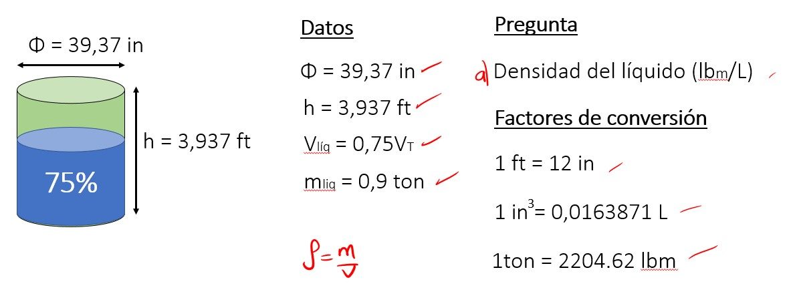
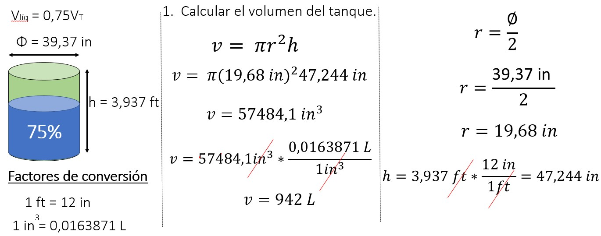
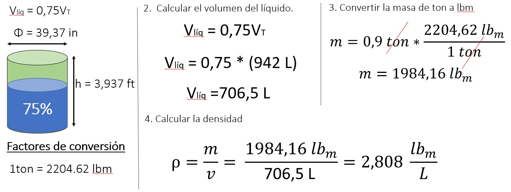
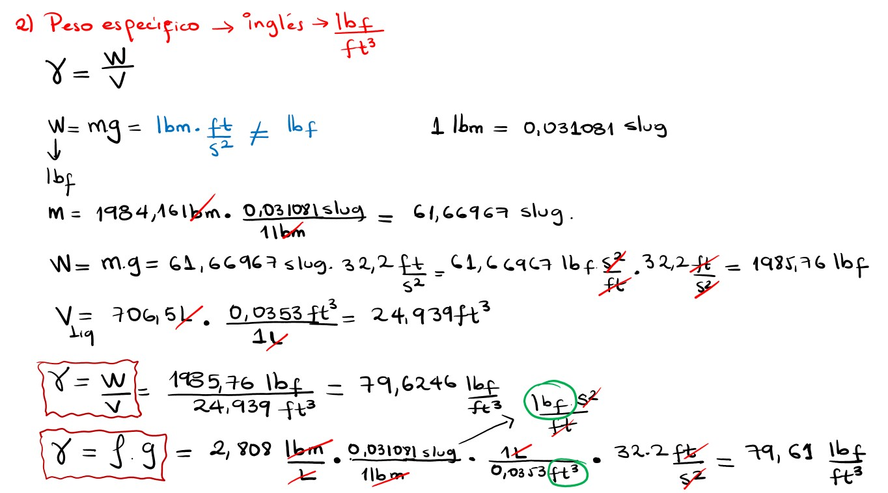
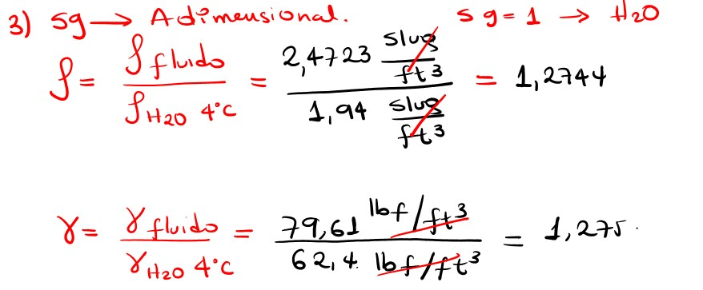
2. Un depósito de glicerina tiene una masa de 1200 kg y un volumen de 0,952 m3. Encuentre el peso de la glicerina (W), la densidad, el peso específico y la gravedad específica (sg).
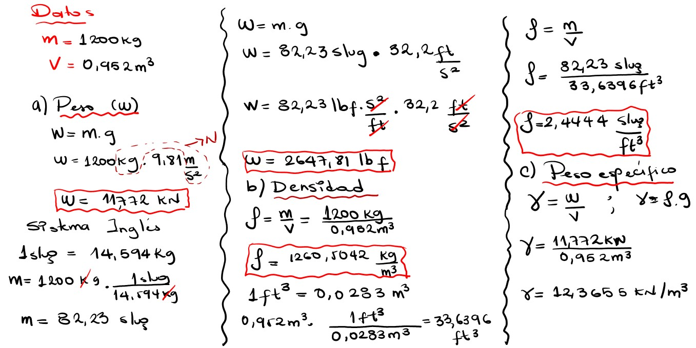
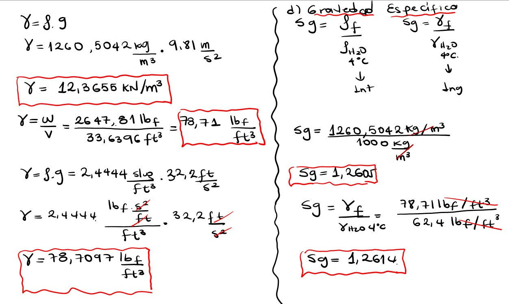
3. La gravedad específica del alcohol etílico es 0,79. Calcula su peso específico (tanto en libras por pie cúbico como en kilonewtons por metro cúbico) y densidad (tanto en slug por pie cúbico como en kilogramos por metro cúbico).
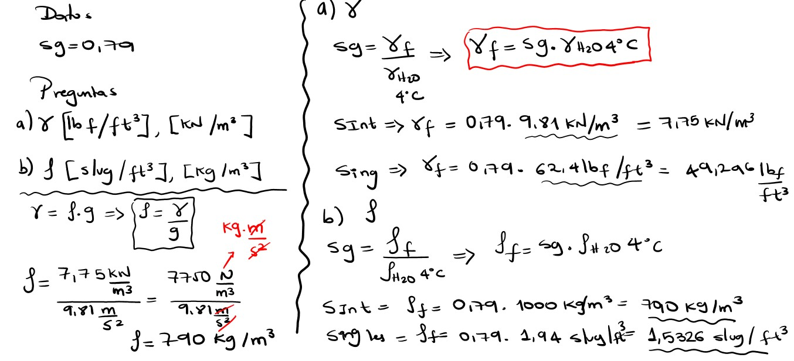
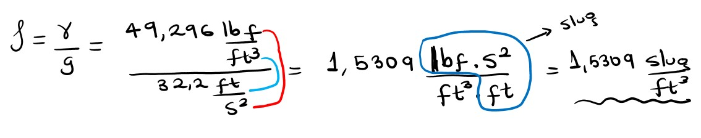
4. Una lata cilíndrica de 150 mm de diámetro, está llena hasta una profundidad de 100 mm con aceite combustible. El aceite tiene una masa de 1,56 kg. Calcule su densidad, peso específico, gravedad específica y la presión en el fondo del tanque.
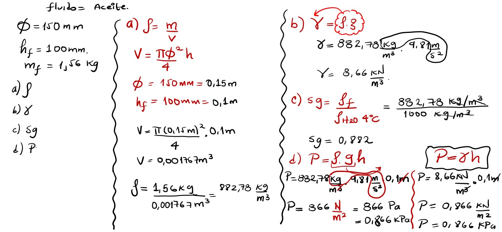
5. El aire a 16°C y a presión atmosférica se encuentra contenido en un recipiente cilíndrico de 3,8 ft de altura y un diámetro de 12 in. Calcule su densidad, peso específico, masa, peso y gravedad específica.
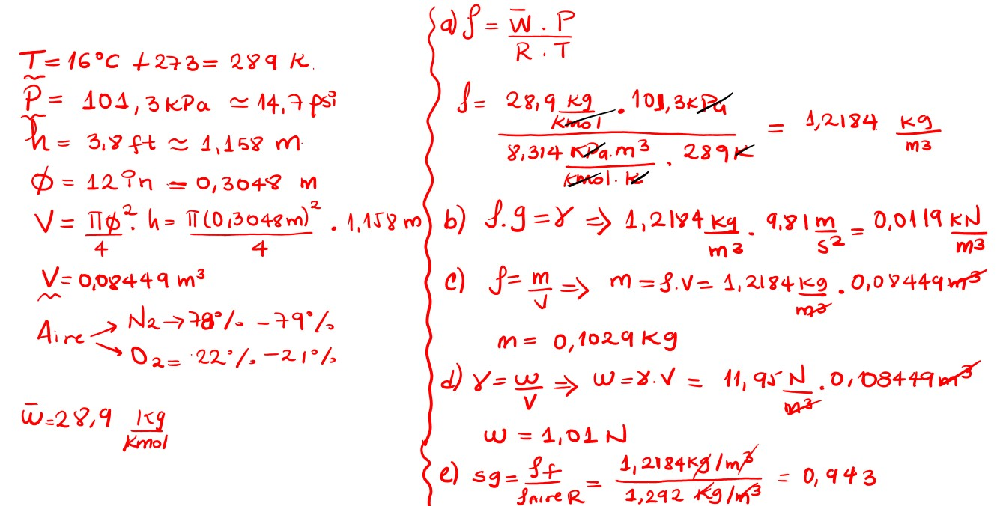